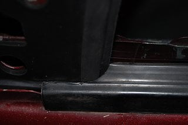
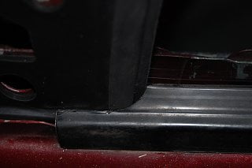

-
I am currently in the process of attempting to replace the window triangles/window guides. I followed the turtorial and it seems like I have the inside done correctly but I'm having trouble getting the outside to line up. There weren't any pictures of the outside in the write up but I am assuming the two seals are supposed to overlap similar to the inside. For the life of me I cannot get them to fully connect. There simply isn't any more material left to stretch on the guide and the triangle is seated into the mounting holes.
On top of that the guide looks like it should seal against the window felt strip but there is a large gap. I tried dumping some water just to see where it went and it just pours into the door.
I don't know where the triangles came from as they came with the car but they are new. The guides came from msa and I just got them. I know dealing with reproduction parts sometimes can lead to fittment issues but I haven't read anything about that so it must be installer error. I'm having the same issue on both sides of the car.
The previous owner had just used electrical tape to seal the corners and I didn't inspect the outside when I removed it. Have I or someone else damaged the felt strip leading to the gap? What else am I doing wrong? -
If nothing else could someone just snap a pic of that area behind/under the mirror so I can see what it is supposed to look like? -
It's been a minute, but I wrote the how-to before others state side had the window triangles reproduced.
From what I remember, my setup looked like yours from the outside. The mirror assembly seals it all up. But before you test fit the mirror, you should have the L shaped guide overlapping the triangle seal on both sides. It took me a few times to get the L shaped guide to seat properly. It is more pliable than it lets on. -
Thanks. I will give it another go. -
I give up. It doesn't matter how hard I pull or in which direction or what order I try to get everything to line up the result is the same. I could get them to overlap when I was holding them together but the second I let go they would pull apart. I did get it to line up for a minute and raised the window and put in the mirror thinking it would hold it in place but the second I tried to line up the inside it pulled apart on the outside. I ended up tearing the window guide twice, thankfully in non critical areas, but I am done with it. I have just resolved to keep it in the garage. Couldn't get the gap between the sill and the guide to close up either.
Just needed to vent a little frustration. This is the most frustrating thing I have ever tried to do to a car. Mostly because it should be easy. -
Hey man don't lose hope i just pulled mirrors of my 85 doors to replace nasty bent goobered 89 ones I'll post some pictures of the installed triangles with some measurements if that will help? Just let me know what you need to see I'll help if I can. -
Thanks. If you could get a shot similar to my second and third pictures up there it would be very helpful. -
Two pics with window in are pass side other two are driver. You may have to slide those seals down or trim them and put window up for a while to get them to settle. Not 100% sure tho I can't see in the door. Is window removed? -
The window is in the door. It doesn't matter how I pull or rearrange the seals it will not seal. If the 3 mounting holes for the mirror are lined up it won't reach the edge of the window guide. If I pull the bottom of the triangle as far as I can on the outside the holes don't line up. If I pull the guide far enough to overlap the bottom of the triangle it doesn't seal at the window sill. If I get it to seal at the sill the hook on the bottom of the guide doesn't stay latched which also makes overlaping the inside impossible.
One thing I noticed about your pictures is the inner door seal is on the outside of the front of the triangle but in Reds89's write up it is underneath. I have mine underneath because the door seal will just flop around if I don't.
I am starting to think the triangles are wrong in some way. Maybe they are old and have shrunk or maybe they are a poor reproduction. The mounting tabs and holes don't line up correctly imho. They came with the car so I have no idea where they were bought. The triangle does not reach the end of the metal underneath where the guide goes no matter what I do. It appears that it does in your photos. The sill doesn't seal at several points along the window on the driver's side but it looks good on the passenger side but I have the same problem on both sides.
I added some pics to show what I'm talking about. I'm seriously considering taking some rtv and making my own or expanding the ones I have.
edit: Looking at Reds89's write up it sure does look like the triangles reach all the way to the end of the metal. That would at least explain why I can't get it to overlap at the top but since it does reach at the bottom it doesn't explain why I can't get the seals to work with the sill. I thought of cutting the tabs off but the mirror holes would be even further off then. 
Last edited by krog 86t; 03-18-2019, 12:49 PM.

Last edited by krog 86t; 03-18-2019, 12:49 PM. -
The seals that I have look different than yours. I got my replacements before Zach and Alex started making the repro's. Mine were from Proudear, and I'll never know the details of how those were made. When Alex/Zach launched the repro triangle seals, I grabbed a pair. If you want, I could send them to you to see if they're different than what you're using. -
Yes I would appreciate that. Sending you a message.

Copyright © 2006–. All rights reserved. Privacy Policy